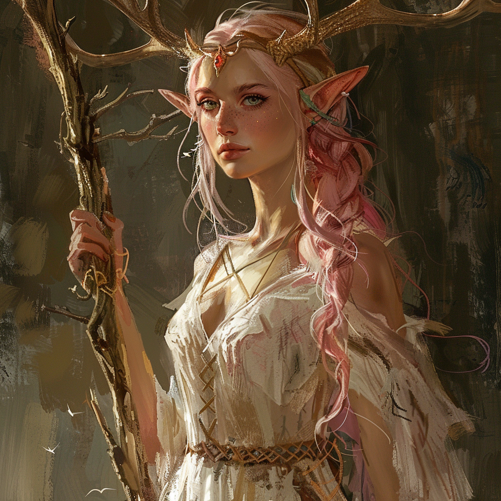

|  |
Elarya TisserêveElarya Tisserêve est le chef des elfes du crépuscule à Naloré, et sa présence inspire respect et admiration. Majestueuse et sage, elle incarne l’espoir de son peuple brisé. En tant que druide et magicienne, Elarya manie la magie avec aisance et maintient des enchantements sur le bosquet des elfes. Nous pouvons rapidement sentir en Elarya une douleur cachée, le poids des tragédies qu’on subit les elfes du crépuscule. Cependant elle reste fière et continue de diriger son peuple. |